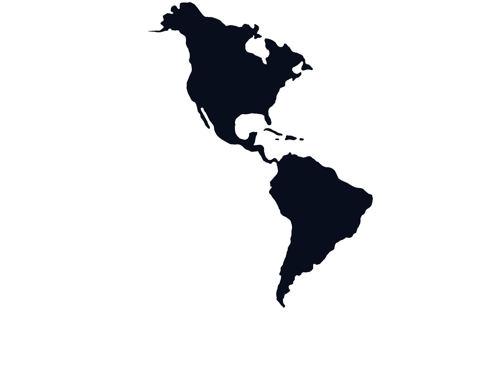

A unified, self-sustaining Western Hemisphere built on shared infrastructure, democratic investment, and the boundless natural wealth that belongs to all its people.
New PanAmerica is a framework for hemispheric unity — not through empire or domination, but through shared infrastructure, democratic investment, and the idea that the western hemisphere possesses every resource it needs to become the most prosperous, self-sufficient region on Earth.
From Canada's technology corridors to Patagonia's wild frontier, from the Caribbean's sun-drenched shores to the lithium-rich Andes, this hemisphere is not a collection of struggling nations. It is a single, extraordinary civilization waiting to recognize itself.
A voluntary union of western nations maintaining sovereign identity while building shared economic, legal, and infrastructure frameworks.
Breaking dependency on external powers by developing the hemisphere's own supply chains — from lithium mines to battery factories, from grain fields to global markets, to keep wealth where it is created.
RWA tokenization that lets every citizen, regardless of wealth or geography, own a stake in the infrastructure of their own hemisphere. Democratizing investment. Democratizing prosperity. Democratizing gentrification.
Blockchain-recorded public spending on every infrastructure project — from bridge foundations to lithium processing plants — making corruption structurally impossible, not merely discouraged.
A continental railway connecting Miami to Rio de Janeiro — carrying freight, passengers, and the idea of a unified Americas. Not a government project waiting for permission. A civilization-scale investment with commercial returns that justify every mile of track.

"A luxury land cruise through the most spectacular landscapes on Earth — the Andes at sunrise, the Amazon at dusk, the Pacific coast at golden hour — on a train that rivals any ocean liner."
Real World Asset tokenization makes every citizen of the hemisphere a potential investor in its infrastructure. A bridge in Uruguay. A railway segment in Colombia. A solar station in the Atacama. A station district in Cartagena. Own it from your phone, for as little as one dollar.
The Caribbean possesses the most extraordinary natural tourism assets on Earth — and has systematically underperformed them due to infrastructure gaps and instability. New PanAmerica transforms the Caribbean from a collection of struggling island economies into the hemisphere's premier luxury destination. Not another Cancún. A genuinely world-class experience where local communities own the wealth their islands generate.
Boutique hotels, marina systems, cultural centers and waterfront developments financed through RWA tokens — owned by local communities, not foreign chains.
A seamless premium ferry and rail network connecting Caribbean islands and linking to the continental railway via Trinidad-Venezuela — one ticket, one continuous experience.
Caribbean music, food, art, and history elevated as global cultural exports — the hemisphere's most distinctive identity marketed to the world on its own terms.
Solar, wind, and tidal energy systems ending the Caribbean's dependence on imported diesel — lowering costs, reducing emissions, and creating local energy sovereignty.
Pan-American RWA trading infrastructure based in the Caribbean — following the Dubai and Singapore model of creating financial services economies around strategic geographic positions.
The Caribbean's coral reefs, rainforests, and marine ecosystems monetized sustainably — making conservation economically rational rather than economically painful.
Every infrastructure project in the New PanAmerica framework is financed transparently, built to environmental standards, and powered by the hemisphere's own renewable resources. From the Río de la Plata bridge to Andean rail tunnels — the hemisphere builds with the future it wants to inhabit.
A combined road-rail bridge connecting Argentina and Uruguay — the southern anchor of the continental railway system. Hydrokinetic turbines beneath its pillars harness river current, solar panels line its deck, and Pampero wind turbines complete a self-powering structure at continental scale.
An over-water coastal railway bypass preserving the Darién Gap wilderness as one of Earth's most biodiverse ecosystems — connecting North and South America without destroying the natural heritage that makes the hemisphere extraordinary.
High-altitude rail tunnels through the Andes connecting the Pacific and Atlantic coasts — completing the Bioceanic Corridor that lets South American goods reach both oceans without the Panama Canal or Cape Horn.
Solar generation in the Atacama, hydroelectric from the Amazon basin, wind from Patagonia and the Caribbean — connected through a hemispheric transmission network that gives every nation access to the full spectrum of the Americas' renewable wealth.
The western hemisphere sits on 60% of global lithium reserves — the critical material for every electric vehicle and battery system powering the energy transition. Right now, that lithium is shipped to China for processing and returned as finished batteries at enormous markup. New PanAmerica closes that loop permanently.
Argentina's lithium production is set to increase five-fold by 2025, potentially adding 1% to GDP from raw extraction alone. Under New PanAmerica's manufacturing framework — where battery cells are produced domestically, semiconductors are manufactured in Belize, train cars are assembled in Brazil, and electric vehicles roll off hemispheric assembly lines — that percentage multiplies dramatically. The hemisphere becomes the world's supplier of the technology that powers the clean energy transition, rather than its raw material donor.
"I arrived at this vision as an artist who sees a better future for America and the rest of the Americas to thrive together."
Joshua Mueller is a digital artist, sculptor, and game designer whose practice spans 3D sculpture, interactive media, and world-building. His body of work explore hemispheric identity, economic justice, and the visual language of an Americas that has not yet realized its own potential.
New PanAmerica is the intellectual framework that unifies his artistic and entrepreneurial vision — a detailed, evidence-based, politically serious proposal for western hemispheric cohesion, dressed not in the language of policy but in the visual language of what this hemisphere could become. The railway. The bridge. The lithium loop. The Caribbean transformed. These are not campaign promises. They are architectural renderings of a possible world.
Mueller's work argues that the western hemisphere possesses every resource — lithium, arable land, renewable energy, young populations, extraordinary natural beauty — to be the most prosperous and self-sufficient region on Earth. The missing ingredient is not capital or technology. It is a vision compelling enough to pull serious people toward it. That is what an artist is for.